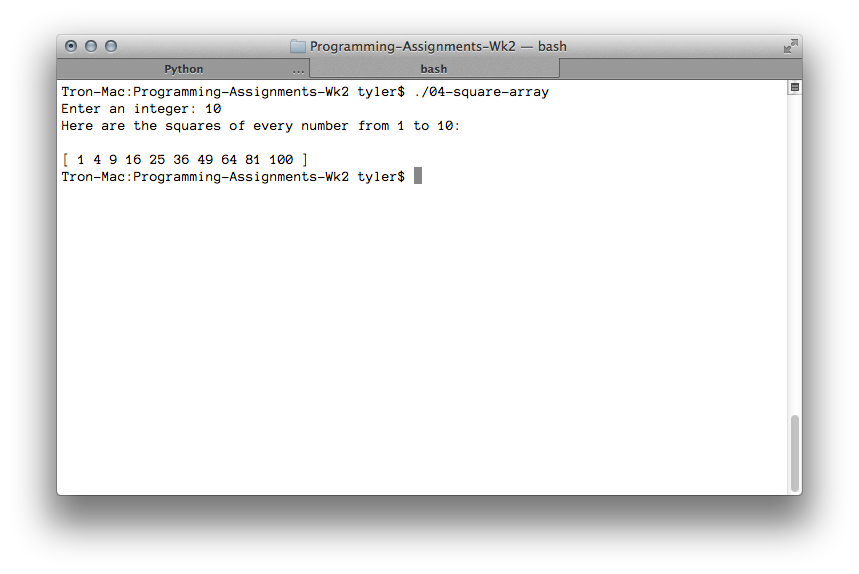

---

layout: default
title: 04-square-array

---

{% highlight c++ %}
// Tyler Mumford, 2014
// Program that squares every element in an int[].

#include <stdio.h>
#include <stdlib.h>

int *createArrayOneToN (int n);
int *squareEveryValue (int count, int *array);
void printArray (int count, int *array);

int main () {
	int *startingArray, *resultArray;
	int givenSize;

	printf("Enter an integer: ");
	scanf("%i", &givenSize);

	startingArray = createArrayOneToN(givenSize);
	resultArray = squareEveryValue(givenSize, startingArray);

	printf("Here are the squares of every number from 1 to %d:\n\n", givenSize);
	printArray(givenSize, resultArray);

	free(startingArray);
	free(resultArray);
	return 0;
}

int *createArrayOneToN (int n) {
	int *array = malloc(sizeof(int)*n+1);
	int i;

	for (i = 1; i <= n; i++) {
		array[i-1] = i;
	}
	return array;
}

int *squareEveryValue (int count, int *array) {
	int *result = malloc(sizeof(int)*count);
	int i = 0;

	for (i = 0; i < count; i++) {
		result[i] = array[i]*array[i];
	}

	return result;
}

void printArray (int count, int *array) {
	int i;

	printf("[ ");
	for (i = 0; i < count; i++) {
		printf("%d ", array[i]);
	}
	printf("]\n");
}
{% endhighlight %}


